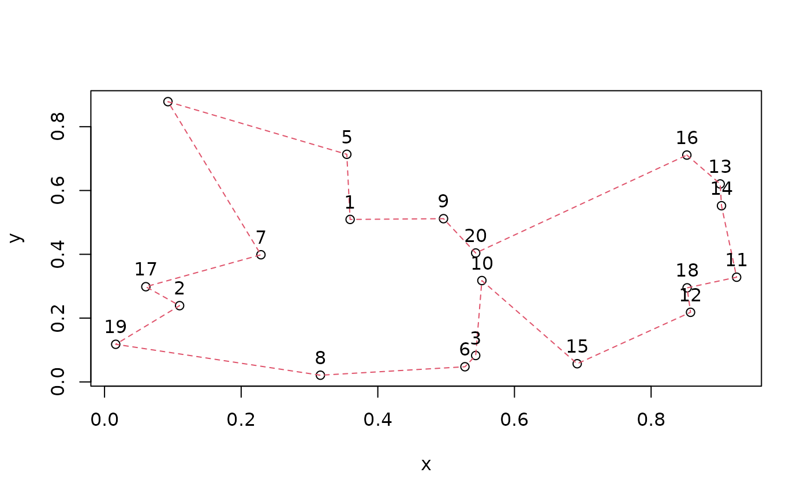
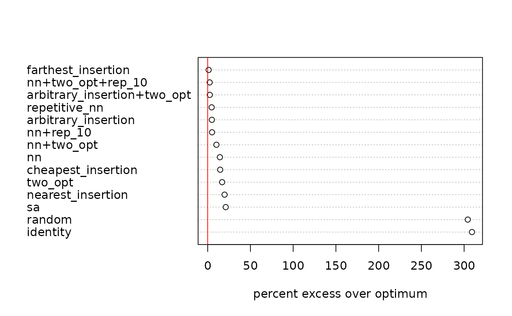

Common interface to all TSP solvers in this package.
Usage
solve_TSP(x, method = NULL, control = NULL, ..., seed = NULL)
# S3 method for class 'TSP'
solve_TSP(x, method = NULL, control = NULL, ..., seed = NULL)
# S3 method for class 'ATSP'
solve_TSP(x, method = NULL, control = NULL, as_TSP = FALSE, ..., seed = NULL)
# S3 method for class 'ETSP'
solve_TSP(x, method = NULL, control = NULL, ..., seed = NULL)Arguments
- x
a TSP problem.
- method
method to solve the TSP (default: "arbitrary insertion" construction followed by the "two_opt" improvement heuristic).
- control
a list of arguments passed on to the TSP solver selected by
method.- ...
additional arguments are added to
control.- seed
an optional non-negative integer seed for reproducible randomized solvers and repetitions. The named argument takes precedence over a seed in
control.- as_TSP
should the ATSP reformulated as a TSP for the solver?
Value
An object of class TOUR.
TSP Methods
TSP supports tour construction methods, tour improvement heuristics and an interface to Concorde (a state-of-the-art external solver). Tour construction methods create a tour from scratch, typically using a construction heuristic. Tour improvement heuristics take an existing tour and try to improve it. If no initial tour is provided for the improvement heuristic, then an initial tour (e.g., a random tour) is automatically created.
Most heuristic methods accept the following extra control parameters in addition to the parameters specified below:
"rep": an integer indicating how many replications (random restarts) should be performed. The best result is returned. The replications can be performed in parallel (see Section Parallel Execution Support).
"seed": a non-negative integer used to make randomized solvers and repetitions reproducible. Each repetition uses a deterministic seed derived from this value, independent of the registered parallel backend.
"two_opt": a logical indicating if two-opt refinement should be performed on the constructed tour. This is just for convenience so a constructive heuristic can be followed by two-opt refinement in a single call.
"verbose": a logical. Most implementations provide verbose output to monitor progress. This argument can also be helpful to see what heuristics are used and what the default parameters are.
Tour Construction Methods
These methods construct tours from scratch. The available tour construction methods are:
"identity", "random" return a tour representing the order in the data (identity order) or a random order. [TSP, ATSP]
"nearest_insertion", "farthest_insertion", "cheapest_insertion", "arbitrary_insertion" Nearest, farthest, cheapest and arbitrary insertion algorithms for symmetric and asymmetric TSPs (Rosenkrantz et al. 1977). [TSP, ATSP]
The distances between cities are stored in a distance matrix \(D\) with elements \(d(i,j)\). All insertion algorithms start with a tour consisting of an arbitrary city and choose in each step a city \(k\) not yet on the tour. This city is inserted into the existing tour between two consecutive cities \(i\) and \(j\), such that $$d(i,k) + d(k,j) - d(i,j)$$ is minimized. The algorithm stops when all cities are on the tour.
The nearest insertion algorithm chooses city \(k\) in each step as the city which is nearest to a city on the tour.
For farthest insertion, the city \(k\) is chosen in each step as the city which is farthest from any city on the tour.
Cheapest insertion chooses the city \(k\) such that the cost of inserting the new city (i.e., the increase in the tour's length) is minimal.
Arbitrary insertion chooses the city \(k\) randomly from all cities not yet on the tour.
Nearest and cheapest insertion try to build the tour using cities that fit well into the partial tour constructed so far. The idea behind farthest insertion is to link distant cities into the tour first to establish an outline of the whole tour early.
Additional control options:
"start" index of the first city (default: a random city).
"nn", "repetitive_nn" Nearest neighbor and repetitive nearest neighbor algorithms for symmetric and asymmetric TSPs (Rosenkrantz et al. 1977). [TSP, ATSP]
The algorithm starts with a tour containing a random city. Then the algorithm always adds to the last city on the tour the nearest not yet visited city. The algorithm stops when all cities are on the tour.
Repetitive nearest neighbor constructs a nearest neighbor tour for each city as the starting point and returns the shortest tour found.
Additional control options:
"start" index of the first city (default: a random city).
Tour Improvement Heuristics
Tour improvement methods take a tour as the argument tour and try to improve the
tour. If no tour is provided, a random tour is used as the initial tour.
The following tour improvement heuristics are available:
"sa" Simulated Annealing for TSPs (Kirkpatrick et al, 1983) [TSP, ATSP]
A tour refinement method that uses simulated annealing with subtour reversal as a local move. The optimizer is
stats::optim()with method"SANN". This method is typically a lot slower than"two_opt"and requires parameter tuning for the cooling schedule.Note: For speed, a relatively small number of evaluations (
maxit) is used by default. A much larger value will result in more competitive results.Additional control options:
"tour" an existing tour which should be improved. If no tour is given, a random tour is used.
"local_move" a function that creates a local move with the current tour as the first and the TSP as the second parameter. Defaults to randomized subtour reversal.
"temp" initial temperature. Defaults to the length of the current tour divided by the number of cities.
"tmax" number of evaluations per temperature step. Default is 10.
"maxit" number of evaluations. Default is 10000.
"trace" set to 1 to print progress.
See
stats::optim()for more details on the parameters."two_opt" Two-edge exchange improvement procedure (Croes 1958). [TSP, ATSP]
This is a tour refinement procedure which systematically exchanges two edges in the graph represented by the distance matrix until no improvements are possible. Exchanging two edges is equal to reversing part of the tour. The resulting tour is called 2-optimal.
Additional control options:
"tour" an existing tour which should be improved. If no tour is given, a random tour is used.
"two_opt_repetitions" number of times to try with random restarts (default: 1).
State-of-the-art Solvers Interfaces
"concorde" Concorde algorithm (Applegate et al. 2001). [TSP, ETSP]
Concorde is an advanced exact TSP solver for symmetric TSPs based on branch-and-cut. ATSPs can be solved using
reformulate_ATSP_as_TSP()done automatically withas_TSP = TRUE. The program is not included in this package and has to be obtained and installed separately.Additional control options:
"exe" a character string containing the path to the executable (see Concorde).
"clo" a character string containing command line options for Concorde, e.g.,
control = list(clo = "-B -v"). Seeconcorde_help()on how to obtain a complete list of available command line options."precision" an integer which controls the number of decimal places used for the internal representation of distances in Concorde. The values given in
xare multiplied by \(10^{precision}\) before being passed on to Concorde. Note that therefore the results produced by Concorde (especially lower and upper bounds) need to be divided by \(10^{precision}\) (i.e., the decimal point has to be shiftedprecisionplaces to the left). The interface to Concorde useswrite_TSPLIB()."verbose" logical;
FALSEsuppresses the output printed to the terminal.
"linkern" Concorde's Chained Lin-Kernighan heuristic (Applegate et al. 2003). [TSP, ETSP]
The Lin-Kernighan (Lin and Kernighan 1973) heuristic uses variable \(k\) edge exchanges to improve an initial tour. The program is not included in this package and has to be obtained and installed separately (see Concorde).
Additional control options: see Concorde above.
Treatment of NAs and Infinite Values in x
TSP and ATSP need to contain valid distances. NAs are not allowed. Inf is
allowed and can be used to model the missing edges in incomplete graphs
(i.e., the distance between the two objects is infinite) or infeasible connections.
Internally, Inf is replaced by a large value given by \(max(x) + 2 range(x)\).
Note that the solution might still place the two objects next to each other
(e.g., if x contains several unconnected subgraphs) which results in
a path length of Inf. -Inf is replaced by \(min(x) - 2 range(x)\) and
can be used to encourage the solver to place two objects next to each other.
Solving ATSP and ETSP
Some solvers (including Concorde) cannot solve ATSP directly.
An ATSP can be reformulated as a larger TSP and solved
this way. For convenience, solve_TSP() has an extra argument
as_TSP which can be set to TRUE to automatically solve the
ATSP reformulated as a TSP (see reformulate_ATSP_as_TSP()).
Only methods "concorde" and "linkern" currently solve ETSPs directly. For all other methods, ETSPs are converted into TSPs by creating a distance matrix and then solved. Note: distance matrices can become very large, leading to high memory usage and long computation times.
Parallel Execution Support
If several repetitions are performed (this includes method
"repetitive_nn") then foreach is used so they can be performed
in parallel on multiple cores/machines. To enable parallel execution an
appropriate parallel backend needs to be registered
(e.g., doParallel::registerDoParallel()).
Reproducible Results
Set the seed argument to make randomized solvers and repetitions
reproducible across sequential and parallel foreach backends. Each
repetition uses a deterministic seed derived from seed. The seed affects
all randomized methods implemented in this package, but it does not control
randomness inside the external Concorde and linkern executables.
Calling solve_TSP() with seed may change R's global random-number stream.
The state of the global stream after the call can differ between sequential
and parallel backends because parallel repetitions set their seeds in the
worker processes.
References
David Applegate, Robert Bixby, Vasek Chvatal, William Cook (2001): TSP cuts which do not conform to the template paradigm, Computational Combinatorial Optimization, M. Junger and D. Naddef (editors), Springer.doi:10.1007/3-540-45586-8_7
D. Applegate, W. Cook and A. Rohe (2003): Chained Lin-Kernighan for Large Traveling Salesman Problems. INFORMS Journal on Computing, 15(1):82–92. doi:10.1287/ijoc.15.1.82.15157
G.A. Croes (1958): A method for solving traveling-salesman problems. Operations Research, 6(6):791–812. doi:10.1287/opre.6.6.791
Kirkpatrick, S., C. D. Gelatt, and M. P. Vecchi (1983): Optimization by Simulated Annealing. Science 220 (4598): 671–80 doi:10.1126/science.220.4598.671
S. Lin and B. Kernighan (1973): An effective heuristic algorithm for the traveling-salesman problem. Operations Research, 21(2): 498–516. doi:10.1287/opre.21.2.498
D.J. Rosenkrantz, R. E. Stearns, and Philip M. Lewis II (1977): An analysis of several heuristics for the traveling salesman problem. SIAM Journal on Computing, 6(3):563–581. doi:10.1007/978-1-4020-9688-4_3
See also
Other TSP:
ATSP(),
Concorde,
ETSP(),
TSP(),
TSPLIB,
insert_dummy(),
reformulate_ATSP_as_TSP()
Other TOUR:
TOUR(),
cut_tour(),
tour_length()
Examples
## solve a simple Euclidean TSP (using the default method)
etsp <- ETSP(data.frame(x = runif(20), y = runif(20)))
tour <- solve_TSP(etsp)
tour
#> object of class ‘TOUR’
#> result of method ‘arbitrary_insertion+two_opt’ for 20 cities
#> tour length: 4.010121
tour_length(tour)
#> [1] 4.010121
plot(etsp, tour)

## manually run a construction followed by an improvement heuristic by
## calling solve_TSP() twice.
tour_constr <- solve_TSP(etsp, method = "nn")
tour_constr
#> object of class ‘TOUR’
#> result of method ‘nn’ for 20 cities
#> tour length: 4.710893
tour_improved <- solve_TSP(etsp, method = "sa", tour = tour_constr)
tour_improved
#> object of class ‘TOUR’
#> result of method ‘sa’ for 20 cities
#> tour length: 3.776177
## compare methods
data("USCA50")
USCA50
#> object of class ‘TSP’
#> 50 cities (distance ‘euclidean’)
methods <- c("identity", "random", "nearest_insertion",
"cheapest_insertion", "farthest_insertion", "arbitrary_insertion",
"nn", "repetitive_nn", "two_opt", "sa")
## calculate tours
tours <- lapply(methods, FUN = function(m) solve_TSP(USCA50, method = m))
names(tours) <- methods
## use the external solver which has to be installed separately
if (FALSE) { # \dontrun{
tours$concorde <- solve_TSP(USCA50, method = "concorde")
tours$linkern <- solve_TSP(USCA50, method = "linkern")
} # }
## register a parallel backend to perform repetitions in parallel
if (FALSE) { # \dontrun{
library(doParallel)
registerDoParallel()
} # }
## add some tours using repetition and two_opt refinements
tours$'nn+two_opt' <- solve_TSP(USCA50, method = "nn", two_opt = TRUE)
tours$'nn+rep_10' <- solve_TSP(USCA50, method = "nn", rep = 10)
tours$'nn+two_opt+rep_10' <- solve_TSP(USCA50, method = "nn", two_opt = TRUE, rep = 10)
tours$'arbitrary_insertion+two_opt' <- solve_TSP(USCA50)
## show first tour
tours[[1]]
#> object of class ‘TOUR’
#> result of method ‘identity’ for 50 cities
#> tour length: 59321
## compare tour lengths
opt <- 14497 # obtained by Concorde
tour_lengths <- sort(sapply(tours, tour_length), decreasing = TRUE)
dotchart(tour_lengths / opt * 100 - 100, xlab = "percent excess over optimum")
abline(v = 0, col = "red")
